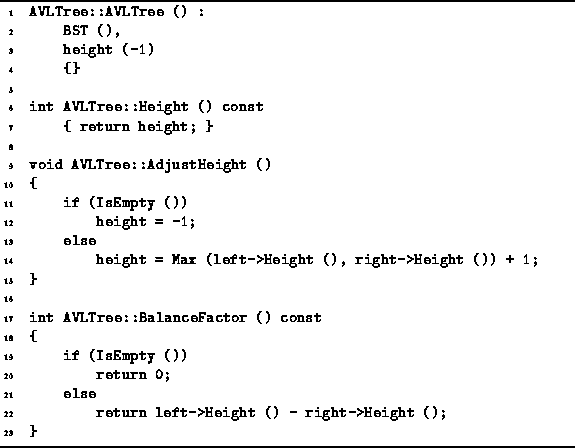

Data Structures and Algorithms
with Object-Oriented Design Patterns in C++
Data Structures and Algorithms
with Object-Oriented Design Patterns in C++
The default constructor for the AVLTree class
is shown in Program  .
The default constructor creates an empty AVL tree.
It does this by calling the default constructor
of the BST class.
The height field is set to the value -1,
which is consistent with the empty tree.
Notice that according to Definition ,
the empty tree is AVL balanced.
Therefore, the result is a valid AVL tree.
Clearly, the running time of the constructor is O(1).
.
The default constructor creates an empty AVL tree.
It does this by calling the default constructor
of the BST class.
The height field is set to the value -1,
which is consistent with the empty tree.
Notice that according to Definition ,
the empty tree is AVL balanced.
Therefore, the result is a valid AVL tree.
Clearly, the running time of the constructor is O(1).

Program: AVLTree Class Constructor, Height, AdjustHeight and BalanceFactor Member Function Definitions
 Copyright © 1997 by Bruno R. Preiss, P.Eng. All rights reserved.
Copyright © 1997 by Bruno R. Preiss, P.Eng. All rights reserved.